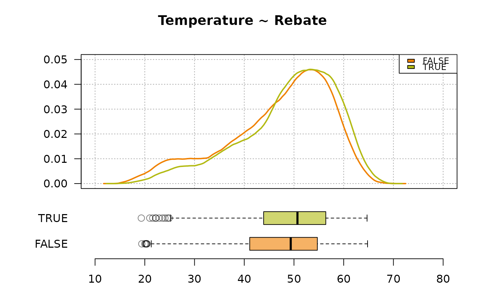

TwoGroups.RdThis function describes a numeric variable by a grouping factor with two levels. First, a descriptive text listing the frequencies and means of the two groups and the results of the significance test is generated. The results of Desc(x~g) are reported as they are provided by the function, followed by a plot consisting of a density plot and a box plot.
This description makes sense, for example, if the age distribution of a collective is to be represented for both sexes.
TwoGroups(x, g, test = t.test, main = NULL,
font.txt = NULL, font.desc = NULL, wrd = NULL, ...)the numeric variable to describe.
the grouping factor (preferably with two levels.)
the test to be applied, default is t.test().
the main title.
the font chosen for the introducing text, when sending the output to Word.
the font chosen for the description, when sending the output to Word.
the pointer to a running MS Word instance, as created by GetNewWrd() (for a new one) or by GetCurrWrd() for an existing one. Default is NULL, which will report all results to the console.
the dots are sent to the internally used function Phrase(). They can be used to choose the language (lang) or provide variable name (xname).
list with the results calculated by the used functions
x <- d.pizza$temperature
g <- factor(d.pizza$rabate)
# we can change the colors for the plot by setting the DescToolsOptions
DescToolsOptions(col=c(horange, hgreen))
TwoGroups(x, g, main="Temperature ~ Rebate")

#> The entire group consists of a total of 1'158 elements. Of these, 580 are FALSE (50.1%, mean x 46.9) and 578 TRUE (49.9%, mean x 49.0).
#> The difference is significant (t-test, p = 2.12e-04) and is -2.15 [-3.29, -1.02] (95% CI).
#> ------------------------------------------------------------------------------
#> x ~ g
#>
#> Summary:
#> n pairs: 1'209, valid: 1'158 (95.8%), missings: 51 (4.2%), groups: 2
#>
#>
#> FALSE TRUE
#> mean 46.9 49.0
#> median 49.4 50.7
#> sd 10.2 9.5
#> IQR 13.6 12.5
#> n 580 578
#> np 50.1% 49.9%
#> NAs 21 18
#> 0s 0 0
#>
#> Welch Two Sample t-test:
#> t = -4, df = 1149, p-value = 0.0002
#>
#>
#> Warning:
#> Grouping variable contains 12 NAs (0.993%).
#>
# for an output to Word simply define the wrd argument
# wrd <- GetNewWrd()
# TwoGroups(x, g, font.desc=list(name="Consolas", size=8),
# main="Temperature ~ Rebate", wrd=wrd)